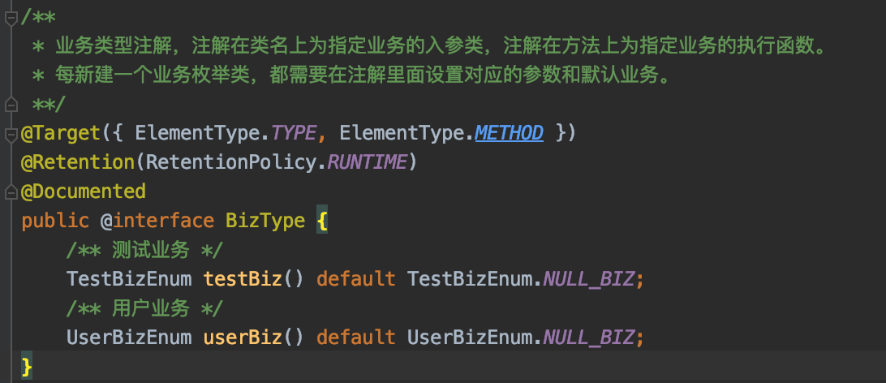

Java后端框架说明文档
为了帮助同学们进行大作业的后端框架，同学们可以点击链接下载
一、后端依赖
本课程的后端框架由助教搭建，为了完美运行后端框架，同学们需要安装的依赖如下：
- Java：需要的Java版本为1.8以上，框架中使用到了Java的反射机制、注解等特性，需要同学们自行学习相关内容。
- Maven：一个项目管理工具，是 Apache 下的一个纯 Java 开发的开源项目。用于管理项目的构建、生成文档、解析依赖、发布等过程。你可以使用Maven快速地引入别人开发好的Java包、自动生成Java文档、快速构建及发布Java项目。想了解更多细节请查看官方文档。
-
SpringBoot：一个Java后台框架，可以简化Spring应用的搭建以及开发过程，是当前最流行的Java后端框架之一，请同学们自学Spring相关知识，主要关注AOP（面向切面编程）概念即可。
-
MongoDB：一个非关系型数据库，旨在为 WEB 应用提供可扩展的高性能数据存储解决方案。MongoDB数据库按照JSON格式存储单个对象，这意味着MongoDB可以存储复杂的数据类型（如数组、字典等）。关系型数据库数据关联性强，存储格式限制性大，以致于经常需要连表查询，出现冗长的SQL语句，MongoDB通过JSON格式的存储很好地避免了这一点。同时在正常情况下MongoDB不再支持事务机制，拥有比关系型数据库更高的并发，但是MongoDB提供了一系列原子性操作，保证了数据的完整性。MongoDB是当前使用最广的非关系型数据库。想了解更多细节可以查看MongoDB相关文档，MongoDB集合在Spring中的api文档请点击此处。
- Redis：一个Key-Value存储式内存数据库，其有几大特点：①全部数据存储在内存之中，避免了磁盘操作带来的瓶颈，拥有极快的访问速度；②采用Key-Value形式存储内容，使用哈希进行索引，理论上的查询时间复杂度为O(1)级别，可以看做一个加强版的HashMap；③采用单线程处理业务逻辑（利用了I/O多路复用原则，解析请求是多线程的），保证了两个业务逻辑一定有先后顺序，不可能同时执行，不需要考虑竞争的问题。由于以上原则，Redis数据库的并发很高，比普通的硬盘数据库普遍快5倍以上，Redis数据库一般用于缓存，提高高并发下的系统运行效率。想了解更多细节可以查看Redis官方文档，同时可以参考Redis指令API文档。
- Nginx：一个高性能的HTTP和反向代理服务器，在本项目中主要使用到其端口转发和静态文件代理的功能。有Nginx文档可供大家参考。
- Docker（唯一需要同学自己安装的依赖）：一个轻量级的虚拟化容器。Docker可以在所有系统上安装，是一个轻量级的虚拟机，用户可以在Docker容器中运行一个独立于电脑主机的新系统，然后在系统上安装依赖、修改文件等。同时容器还可以打包导出为镜像，方便他人或自己在其它电脑上导入。其作用类似于Java虚拟机，即屏蔽不同系统的底层细节，为在其中运行的程序提供统一的接口。不同的是Java虚拟机上只能运行Java程序，而Docker容器上运行的则是一个虚拟机系统，用户可以随意迁移虚拟机系统而不会报错。实现了一次配置，多次利用的功能。了解更多请参考Docker文档，安装Docker和使用可以查看Docker教程。助教已经将后端框架所需要的全部依赖都封装于Docker容器中，同学们只需要安装好Docker然后导入Course.tar镜像文件就可以直接运行后端框架了，具体操作过程请参考第四章！
以上相关内容请同学们自学为主，课堂上不会展开详细的介绍，同学们可以先掌握一个基本，主要是多实战。实战多了，坑踩多了，很多东西理解就深入了。
二、后端框架解析
2.1 目录介绍
使用IntelliJ IDEA打开项目文件，可以观察到的项目目录如下：
其中
- .idea文件夹：IDEA的配置文件夹，不需要修改，忽略。
- .mvn文件夹：Maven的配置文件夹，不需要修改，忽略。
- logs文件夹：项目配置的日志输出目录，存储着服务器的运行日志，你可以在项目设置中修改为其它的路径。
- src文件夹：项目的Java源码和资源文件所在文件夹。
- pom.xml：Maven的配置文件，如果需要修改外部依赖，则需要修改此文件。
- 其它文件：都是默认的配置文件，不需要修改，忽略。
src文件夹中存储着项目的主体：
- main.java文件夹：存储项目的Java源码，都在com.flying.dragon包中。
- main.resources文件夹：存储着项目的资源文件，其中application.properties为SpringBoot配置文件，logback.xml为日志配置文件。
2.2 框架结构分析

如图，项目的主要代码由三大模块组成（DragonApplication是SpringBoot设置的默认的启动类，只负责启动应用，没有什么内部逻辑，不包含在模块中）：①Base基础模块；②Biz业务模块；③Frame框架模块。

如图为三大模块之间的相互关系，下面将对这三大模块展开详细的介绍。
2.2.1 Base基础模块
Base基础模块主要是为项目提供基础属性，如
-
Annotation注解：项目的所有Java注解。
-
Constant常量：项目的所有常量。
-
Enum枚举：项目中的所有枚举，报错、警告和业务枚举不在此中。
-
Error错误：项目中所有的报错，包括警告和错误的枚举类。
-
Model模型：项目中所有的模型，模型与数据库中的文档一一对应，当对象从数据库中读取出来会自动映射到对应的模型类中。
值得一提的是，Base基础模块中都是静态数据，没有动态代码，Biz业务模块和Frame框架模块都可以利用到这些数据。
2.2.2 Frame框架模块

Frame框架模块搭建了项目的整体框架，并为Biz业务模块的业务运行提供了必需的工具，如：
- Aspect切面：定义了项目中的所有切面（切面意义请自行学习Spring），切面可以控制业务的具体执行流程，如LogInAspect切面将判断用户是否登录和具有对应权限，有对应权限则执行对应业务，否则通过报错中断业务的执行。
- Config配置：定义了项目中的所有配置，这些配置是项目运行的基础，没有了这些配置，项目会运行不起来。WebSocketConfiguration配置了WebSocket监听端口，让后端可以处理WebSocket请求；而RedisConfig配置则配置了与Redis数据库的连接，让用户可以连接并处理Redis缓存。
- Util工具：定义了所有的工具类，这些类是被Biz业务模块广泛使用的，但又与业务逻辑无关的。这些工具类也都是助教以前在其它项目中使用过的。如RedisUtil工具类封装了对Redis数据库的便捷操作，封装的函数非常多，是以前的项目有这么多需求，所以写了这么多，这次只不过是复制粘贴过来了，所以里面的内容很全。相对于Biz业务模块与业务高度相关的代码，这部分的代码具有极强的可复用性，换言之，这些工具类换了一个项目也可以继续使用，不需要被替换。具体每个工具类的作用可以查看相关注解。
2.2.3 Biz业务模块

Biz业务模块是项目中最核心的部分，Base基础模块和Frame框架模块都是为Biz业务模块提供服务的，项目中所有的业务逻辑譬如用户登录、用户注册、注销登录等都在Biz业务模块中处理。业务模块有五大子模块和一大组件：
- Entrance子模块：处理所有的外部请求，对外部请求进行封装，然后转发到分发器Dispatcher中。其中Http请求普遍使用Entrance.Controller处理，定时器请求使用TimerJobHandler处理，WebSocket请求使用MySocketHandler处理。
- Params子模块：保存了业务所有的入参及出参。
- Manager子模块：业务第一层处理子模块，接受Dispatcher分发的业务并具体处理业务、返回处理结果，此模块不与MongoDB数据库进行交互。
- Processor子模块：业务第二层处理子模块，负责执行原子逻辑，直接与MongoDB数据库进行交互，提供接口给第一层业务处理组件Manager层，具有高度的可复用性。如根据用户名获取用户、删除一个用户、增加一个用户，这些都是原子逻辑。
- BizType子模块：业务枚举模块，每个枚举类都会列举出该类型所有的业务。每个业务对应一次具体的请求，Manager模块中的每个执行逻辑都对应一个业务。
- Dispatcher组件：业务分发器，负责根据不同的业务参数输入，将不同的业务请求派发到对应的Manager处理逻辑之中。
外部请求统一由Entrance接受，然后转发给Dispatcher，Dispatcher再派发给Manager，由Manager调用Processor接口完成业务逻辑处理，这四个部分的关系如下图所示：

2.3 业务执行流程详解
为了加深同学们的理解，下面将介绍一次业务——用户登录在框架中的详细执行过程，在运行框架前，请同学们先配置好Redis和Mongodb数据库，具体配置过程请查看第四章，不然可能会报错。在服务器启动以后，在浏览器中输入http://localhost:8080/user/login?username=test&password=test，后端会处理相关请求，具体处理流程如下。
2.3.1 入口
前面提到过，Entrance模块中管理了所有的入口，意味着业务在执行前都会进入此包中。其中Controller管理了所有的Http入口，意味着所有的Http请求都会进入此包中，查看此包中UserController类的代码，如下：
/**
* @描述 用户控制器，处理外部传入的操作用户业务的http请求
**/
@RestController
@RequestMapping("/user")
public class UserController {
@Autowired
Dispatcher dispatcher;
/** 用户登录http接口 */
@RequestMapping(value="/login")
public Mono<String> login(LoginInParams inParams) {
inParams.setBizTypeStr(UserBizEnum.USER_LOG_IN.toString());
return Mono.just(dispatcher.dispatch(inParams));
}
/** 用户退出登录http接口 */
@GetMapping(value="/logout") /** 使用注解可以限制请求的方式，此注解限制只能通过 get 方式请求 */
public Mono<String> logout(CommonInParams inParams) {
inParams.setBizTypeStr(UserBizEnum.USER_LOG_OUT.toString());
return Mono.just(dispatcher.dispatch(inParams));
}
}
可以看到此类有两个注解，第一个注解RestController是告诉SpringBoot我这一个类用于处理Http请求的，第二个注解RequetMapping是告诉SpringBoot我这一个类处理的http请求路径是/user。那么访问/user/login，将会跳转到此类中的带RequetMapping(value="/login")注解的函数中，即login函数。可以看到此函数的入参为一个类LoginInParams，此类为业务的入参类，具体路径为com.flying.dragon.Biz.Params.UserParams.in.LoginInParams，内部代码如下：
@BizType(userBiz = UserBizEnum.USER_LOG_IN)
public class LoginInParams extends CommonInParams {
// 登录用的密码
@Required
private String username;
// 登录用的密码
@Required
private String password;
public String getUsername() {
return username;
}
public void setUsername(String username) {
this.username = username;
}
public String getPassword() {
return password;
}
public void setPassword(String password) {
this.password = password;
}
}
可以看到此类中有两个属性username和password，SpringBoot会自动解析http请求中携带的所有参数（包括路径参数、表单参数等）并将其自动放入名称对应的属性值中。此类继承自CommonInParams类，该类中有一个必须设置的参数bizTypeStr，此参数会标识业务类型，保证业务被正常处理。在login函数中，我们将参数的业务类型设置为com.flying.dragon.Biz.BizType.UserBizEnum.USER_LOG_IN，表明这是用户登录业务。
2.3.2 派发业务
在login函数的最后一行，调用Dispatcher类的dispatch函数来派发业务。com.flying.dragon.Biz.Dispatcher的dispatch函数代码较长，在此不一一列举，只解析其中的关键部分：
第51-68行代码会根据参数中的bizTypeStr，获取执行业务的类和函数。在com.flying.dragon.Biz.Manager.UserManager中有个函数userLogin，其注解为@BizType(userBiz = UserBizEnum.USER_LOG_IN)，系统在初始化的时候会根据这个注解初始化业务名称到函数的Map，以后就会根据这个Map(CommonManager.managerMap)来获取到业务执行的函数。具体初始化的流程请查看com.flying.dragon.DragonApplication中相关代码。
dispatch函数中正是根据这个CommonManager.managerMap来获取业务执行的函数和类。在获取到业务执行的函数和类之后，就会使用java的反射机制来执行这个函数，并返回函数的处理结果。此外dispatch函数中还会捕获并处理所有的异常，将异常记录在日志文件中，日志文件的路径为/logs。
2.3.3 执行业务
在经过业务分发以后执行逻辑会进入到UserManager.userLogin函数中，如下图所示：
这里就可以正常地书写我们的业务代码了，可以看到这里获取到了参数中的用户名，然后根据用户名查找用户，值得一提的是，如果没有连接好mongodb，这里的userProcessor.getUserByUsername函数将会处理很长一段时间并报错。一但用户名和密码匹配正确以后，就会判断当前是http还是WebSocket访问，然后记录登录状态。最后，所有的业务执行返回结果都必须为CommonOutParams或其子类。这里业务逻辑简单，只需要返回登录成功与否的结果，所以可以直接返回一个新的CommonOutParams实例，如果需要返回给客户端多个参数，需要新建CommonOutParams的子类，并设置对应的属性。
2.3.4 封装返回结果
在Manger层返回后，dispatch会封装Manger返回的结果，如下图：
这里会把所有的返回结果都转化为JSON格式，返回值可以是单个参数，也可以是多个参数（会转化为JSON数组）。具体转化细节请自行查看源码，其实很简单，使用java的反射机制就可以轻松实现。这个返回结果会在最后使用Mono.just封装然后返回给客户端，一个完整的Http请求就完成了！
此外，如果业务执行中抛出错误，dispatch函数也会自行捕获错误，并将错误信息记录在日志中，然后返回给客户端，如下：
内部抛出的错误可以分为三种：①自定义警告，记录警告日志，并将错误内容返回给客户端；②自定义错误，记录错误日志，并将错误内容返回给客户端；③系统错误，记录错误日志，并返回服务器内部错误，这种错误一定要特别留意，因为是预期之外的错误，请查看错误日志追寻缘由！
2.3.5 其它类型业务流程
WebSocket和定时器业务的执行流程，除了入口部分由Controller变为com.flying.dragon.Biz.Entrance.MySocketHandler和com.flying.dragon.Biz.Entrance.TimerJobHandler，其余部分和Http请求的执行流程完全一样，没有任何区别，因为二者也使用dispatcher分发器来分发业务，后续的业务流程完全一致。系统会在线程变量中使用com.flying.dragon.Base.Enum.AccessChannel来标识此次业务是http还是WebSocket或定时器业务。这两个入口的具体处理过程请同学们自行查看源码来了解，注意WebSocket传输的参数一定要是JSON格式的，且其中的属性与你定义的继承自CommonInParams类的入参类中的属性名称一一对应，不然会出错！
2.4 业务扩展指南
同学们如果需要扩展业务，需要干的事情如下。
2.4.1 新增业务枚举
如果是在已经存在的业务类型（框架中已经存在测试业务类型com.flying.dragon.Biz.BizType.TestBizEnum和用户业务类型com.flying.dragon.Biz.BizType.UserBizEnum）中增加同类型业务，只需要增加枚举变量即可。如果是新增某种类型的业务，需要新建业务枚举类，业务枚举类中必须设置一个空业务NULL_BIZ，此外需要在com.flying.dragon.Base.Annotation.BizType类中增加你的业务属性并设置default值为对应业务的NULL_BIZ，如下图：

2.4.2 新增入参
每个业务必须有对应的入参，且每个入参都需要注解出该入参对应的业务，如下图：
此图为用户登录业务对应的入参。你在新增业务的时候需要仿照此类来书写自己的入参，每个业务的入参都需要继承自CommonInParams类，且必须通过BizType注解声明自己对应的业务。
2.4.3 新增业务执行函数
如果是新业务类型，需要新建Manger类，且新建的Manger类必须继承自CommonManager，否则在已有的Manager类中增加函数，并设置BizType注解，如下图：
要求有三：①函数的入参必须为业务对应的入参类，即注解了该业务类型的继承自CommonInParams的类或其本身；②函数的出参必须为继承自CommonOutParams的类或其本身；③函数必须注解BizType，且指定其中的一种业务，则分发器会将该业务自动分发给此函数处理，指定多种业务时，只会匹配第一个业务。
2.4.4 书写其它部分代码
此外，你还需要根据自己的业务需求，书写其余部分的代码，具体如何书写由你自己决定。
2.5 框架特性介绍
本框架内容追求高度模块化的原则，系统可扩展性极强，不管是小型系统开发还是大型系统开发都可以在此框架基础上拓展完成，是一个不错的Java服务器框架。在刚开始写代码的时候，同学们可能会感觉内部逻辑复杂，因为代码模块较多，新增一个业务可能需要修改多个模块。但是随着代码量的增加，业务的复杂程度不断上升，此框架良好的扩展性就会发挥作用，此框架可以保证大量的业务扩展而很难发生内部逻辑紊乱，这一点同学们可以在实际开发中慢慢体会。
此外，框架中封装了Quartz定时任务组件，同学们可以调用此组件完成服务器的定时任务。同时增加了Logback日志系统，方便同学追踪用户行为、定位服务器内部错误，日志的具体配置文件是resources/logback.xml。感兴趣的同学甚至还可以在日志系统的基础上配置日志监控，将日志内容图表化，可以更方便地统计自己的各业务执行状态，配置方式请自行搜索ELK(ElasticSearch + Kibana + Logstash)了解。
三、后端编程规范
3.1 业务逻辑规范
业务逻辑规范分为不可违背和推荐性两大块，不可违背业务逻辑规范一旦被违背，则代码得分将大大降低，推荐性业务规范视完成程度酌情给分。
3.1.1 不可违背的业务逻辑规范
- 所有外部请求必须经过Entrance处理，然后交由Dispatcher派发，才能转入内部执行，严禁任何外部请求绕过Entrance和Dispatcher转入内部执行，避免业务执行逻辑混乱。
- Dispatcher派发的请求只能派发给第一层业务处理逻辑Manager层执行，严禁将业务派发给第二层Processor层，避免业务派发逻辑混乱。
-
Manager层业务执行函数的入参必须是CommonInParams或其子类，出参必须是CommonOutParams或其子类，这么做是为了规范业务入参和出参的格式，保证日后查看业务逻辑时不会出现出入参的紊乱。Processor层的出参和入参随意。
-
Manager层可以调用Manager和Processor层的函数，Processor层只能调用Processor层的函数，严禁Processor层调用Manager层的函数，避免调用逻辑层级的混乱。
- 硬盘数据库(Mongodb)数据只能通过Processor层直接访问，严禁Manager层直接访问硬盘数据库，缓存数据库(Redis)随意，避免硬盘数据库操作逻辑混乱。
- 所有可能出现报错的业务逻辑都应该被try-catch包裹并处理，严禁出现任何不可能被捕获的异常，且必须记录异常日志，避免内部异常带来的业务逻辑混乱。同学们如果新增Entrance逻辑需要保证满足这一条原则。
- 所有的自定义报错均需列举在枚举类中（可参考SystemErrorEnum和UserWarnEnum示例），方便日后追溯根源。
3.2.2 推荐性的业务逻辑规范
- 执行关键操作时记录日志，方便根据日志追踪用户行为。
- 尽量将可复用的、需多次重复使用的、与业务无关的处理逻辑封装在Frame框架模块的Util工具包中，方便日后复用。
3.2 代码书写规范
- 代码应该书写工整，利用换行符、空格符保证代码的可读性，出现冗长的单行代码是较大的扣分项。
- 每个类、类中的每个字段和方法（除get和set方法）都需要有对应的注释说明，方法中如果代码量较多，也应该分块予以注释说明。
- 代码整体组织结构需要按照Base基础模块、Frame框架模块和Biz业务模块的三大模块原则来进行，且每个类应该按照相关性放在对应的包中。实际上框架已经帮大家分好模块和包了，基本上只需要在框架已有的包上进行扩展即可。
四、后端运行教程
由于Mac和Windows下的Docker实际运行在虚拟机上，而Linux下的Docker则直接运行在系统上，所以部分教程会因为系统的不同有所区别，没有写明不同系统的代表是所有系统通用的部分。
4.1 安装Docker
参考Docker教程安装docker并配置好环境变量。
4.2 导入镜像
助教已经将所有的环境依赖直接封装在一个docker镜像文件course.tar中，请访问链接下载镜像，同学们只需要运行如下命令导入该镜像即可：
然后运行docker images命令就可以看到导入的镜像文件。
4.3 创建Docker容器
4.3.1 Mac和Windows系统
对于Mac和Window系统，运行如下命令以创建docker容器：
其中docker run代表创建并运行容器，其它参数说明如下：
-itd：-i 交互式操作；-t 在终端运行命令；-d在后台运行。-p 8070-8090:8070-8090 -p 6379:6379 -p 27017:27017：指定端口映射，将6378、27017和8070-8090的容器端口映射到主机端口上，访问主机的这些端口就相当于访问容器的对应端口，不应该映射过多个端口，否则容器的启动会非常慢。--name myWork：指定容器的名称为myWork，你可以自行设置容器名称。course:v1：创建容器用的镜像，这个镜像是之前通过docker import导入的镜像。bash：在容器中运行的具体命令，这个bash命令代表运行命令行。
4.3.2 Linux系统
对于Linux系统，运行如下命令以创建docker容器：
其中docker run代表创建并运行容器，其它参数说明如下：
-itd：-i 交互式操作；-t 在终端运行命令；-d在后台运行。--name myWork：指定容器的名称为myWork，你可以自行设置容器名称。--net=bridge：指定容器的网络模式为bridge桥接模式，这样子系统会给每个容器分配一个内部ip地址，可以直接通过ip地址访问该容器。实际上不需要指定该选项，因为bridge是docker创建时候的默认网络选项。bash：在容器中运行的具体命令，这个bash命令代表运行命令行。
此种情况下，连接上（如何进入容器命令行请参考4.4章节）容器以后，在容器内部执行ip address命令，会显示如下内容：

其中eh0选项中的172.18.0.2即系统分配给容器的ip地址，在系统中（非容器中）ping该地址，是可以有反应的，如下图：

这个内部ip地址非常重要，以后很多地方（如远程连接数据库，配置nginx端口转发等）都会用到这个内部ip地址。
这里解释一下为什么在Linux系统中可以使用桥接模式而在Mac和Windows系统中需要使用端口映射的模式，这是因为Mac和Windows下的Docker实际运行在一个Docker自己开发的Linux虚拟机上，而Linux下的Docker则直接运行在系统上。使用桥接模式运行Docker容器，意味着运行容器的系统可以通过内部ip访问Docker容器，但是这个运行容器的系统对Mac和Windows而言是内部的虚拟机，其无法直接和Mac、Windows系统进行交互，所以在Mac和Windows系统上采用主机模式运行Docker是没有任何意义的，只能通过端口映射的方式来与系统交互。
4.3.3 关闭和启动容器
在创建容器后运行docker ps命令就可以看到所有正在运行的容器，docker ps -a则可以看到所有的容器（包括关闭的容器）。
关闭容器的命令为
重启容器的命令为
注意重启容器不是docker run，docker run会创建一个全新的容器，该新容器与旧容器数据完全隔离！
4.4 启动Redis和Mongodb
在创建完成容器以后，通过执行
命令连接容器的终端，通过终端对容器的内部进行操作。在运行完成该命令后，此时已经进入了容器的终端。通过ps -aux命令可以判断目前是否在容器中，这个命令可以展示目前所有正在运行的进程，容器中的进程一般很少且PID编号较小，而Linux系统本身会有很多个进程，且很多进程的PID编号较大，如下图为一个容器运行ps -aux命令展示的进程列表：

可以看到容器中目前只有五个进程在运行，其中两个进程是bash命令行进程，一个进程是ps -aux进程本身，剩下两个进程就是在容器中启动的MongoDB和Redis进程。之所以容器中的进程这么少是因为容器的依赖进程都已经在运行容器的系统（对于Mac和Window而言是虚拟机）上存在，容器不需要再创建这些进程，容器所做的只是将容器本身的环境与系统环境隔离开来而已。
容器中启动MongoDB的命令是：
容器中启动Redis的命令是：
此时运行ps -aux可以看到MongoDB和Redis的进程信息。可以下载MongoDB Compass和Another Redis Desktop Manager来对MongoDB和Redis进行可视化操作。Redis可以使用默认配置直接连接不需要密码，本地连接MongoDB的配置如下图：

其中密码为course2021。
远程连接Linux系统上的MongoDB和Redis都需要通过SSH隧道连接，且需要把Hostname从localhost改成容器的内部ip地址如172.18.0.2，如下图为使用Another Redis Desktop Manager远程连接Linux服务器上容器（内部IP为172.18.0.2）中的Redis数据库连接配置示例：

其中SSH隧道的host就是服务器公网IP，Username和Password就是服务器用户和密码。
4.5 启动Java服务器
4.5.1 Mac和Windows系统
首先需要通过git clone下载源码：
一般而言，同学们使用Mac和Windows系统只是为了在本地调试服务器。在调试前需要同学们在系统上安装Maven。
在安装好Maven以后，直接通过IntelliJ IDEA打开项目源码，然后右键点击pom.xml->Maven->Reimport，则Maven会自动下载项目所需的全部Java依赖包，在下载好之后就可以直接运行或者调试应用了，IntelliJ IDEA会自动识别出启动类com.flying.dragon.DragonApplication，如果没有识别出来请自己指定。

运行成功后在浏览器输入http://localhost:8080/user/login则可以获取到如下内容：
然后通过连接WebSocket，发送空文本内容，会收到如下所示消息：

注意这种情况下，使用的MongoDB和Redis是运行在docker容器中的，容器停止运行会导致无法连接到MongoDB和Redis。但是Java服务器是运行在自己电脑上的。
4.5.2 Linux系统
将Java源码上传到Linux服务器上，上传方式请自行选择。
然后在系统中（非容器中）运行如下命令将Java源码拷贝到docker容器中：
或者也可以在容器中通过git clone直接下载源码：
进入容器的源码主目录下（即包含pom.xml的目录），运行
此时容器会通过maven自动下载项目依赖的所有jar包，第一次运行需要下载很多依赖包，时间比较漫长，请耐心等待容器下载完成，在依赖包下载完成后还会自动将项目打包成jar包。打包完成的jar包存储在target目录中，名称为dragon-0.0.1.jar，以后代码有修改时需要重新打包也可以运行此命令。
此时进入jar包所在目录执行
则服务器会在后台启动，在这种情况下，MongoDB、Redis和java应用程序都是运行在容器之中的，在Linux系统（非容器中）中输入
其中的172.18.0.2请自行替换为自己容器的内部ip，返回如下信息说明服务器启动成功（注意启动需要一定的时间，具体进程可以查看nohup.out）：
可以在容器的warn日志文件中查看更多内容，日志文件目录为容器中jar包文件同级目录logs。但是此时的服务只可以在内部访问，因为172.18.0.2这是个内部ip地址，外部无法访问。这时候就需要利用到了nginx的转发功能。
在系统中（非容器中）下载好nginx，配置如下：
server{
listen 8000; # 监听的端口
location / {
proxy_pass http://172.18.0.2:8080; # 转发规则
proxy_set_header Host $proxy_host; # 修改转发请求头，让端口的应用可以受到真实的请求
proxy_set_header X-Real-IP $remote_addr;
proxy_set_header X-Forwarded-For $proxy_add_x_forwarded_for;
}
}
启动nginx则会自动将8000端口的请求转发到容器172.18.0.2的8080端口，就可以在外部访问了。访问结果如下（需要服务器对外开放8000端口）：

4.6 运行测试业务
为了方便大家判断自己环境是否配置正常，助教在框架中封装了一系列测试任务，如下图：
如果所有的测试任务都可以正常执行，说明你的程序环境是完全没有问题的。至于怎么运行测试任务，请同学们仔细阅读框架代码，然后就会明白了。
测试任务运行正常以后，同学们就可以在框架上开始自己的后台开发之旅了！
五、课程共用服务器访问指南
在大作业布置的同时，我们会为同学们提供课程共用的服务器，介时会为同学提供服务器的访问指南。